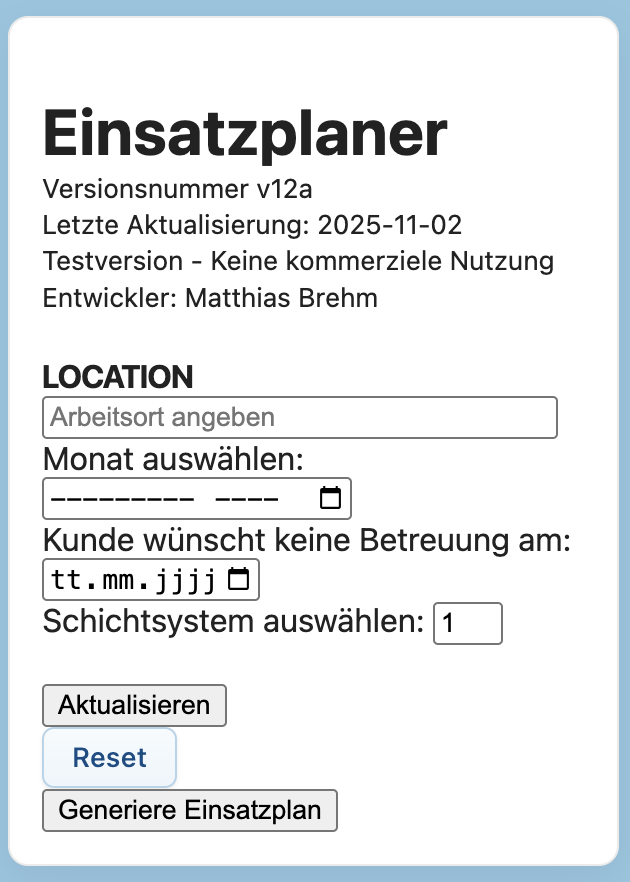
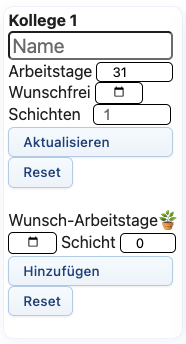

Der Einsatzplaner ist ein einfaches, webbasiertes Tool zur Dienstplanung für kleine Pflegeteams. Ziel ist eine schnelle, übersichtliche und faire Erstellung von Dienstplänen – ohne komplexe Software oder aufwändige Excel-Tabellen.
Halbautomatisch & flexibel: Das Tool schlägt Dienstpläne vor, basierend auf Arbeitszeiten, Wunschfrei, Schichtpräferenzen und freien Tagen. Sie können alle Vorschläge jederzeit anpassen – so bleibt die Planung effizient und individuell.
Direktes Feedback: Probieren Sie verschiedene Schichtsysteme, Teamgrößen und freie Tage aus und sehen Sie sofort, wie sich die Verteilung verändert.
Der Einsatzplaner läuft direkt im Webbrowser (empfohlen: Google Chrome) und benötigt keine Installation.
Hinweis: Für eine optimale Nutzung empfiehlt sich ein Desktop-PC oder Laptop mit großem Monitor. Die Anwendung ist nicht für Smartphones oder kleine Laptops optimiert.
Sie können den Einsatzplaner sofort im Browser nutzen – es ist keine Installation oder Registrierung erforderlich.
Webseite: www.assistplan.deEs werden keine personenbezogenen Daten gespeichert.
Es gibt 3 Bereiche:

Wählen Sie Ihren Standort (z.B. Pflegeeinrichtung, WG, ambulante Betreuung) und den gewünschten Monat aus, für den Sie den Dienstplan erstellen möchten. ℹ
Hier können Sie Tage eintragen, an denen keine Dienste geplant werden sollen – zum Beispiel bei geplanten Schließtagen, Fortbildungen, Team-Events, Urlaub des Klienten oder anderen Gründen ohne Dienstbetrieb. So berücksichtigt der Planer automatisch alle Besonderheiten Ihres Teams und Sie behalten die volle Kontrolle über freie Tage.
Wählen Sie aus, wie viele Schichten pro Tag Ihr Dienstplan haben soll (1, 2 oder 3 Schichten).
Hinweis:
Die genauen Uhrzeiten der Schichten spielen für den Einsatzplaner keine Rolle – Sie wählen einfach Schicht 1, 2 oder 3, unabhängig von deren Beginn oder Ende. Das macht die Planung besonders flexibel und anpassbar an Ihr Team.
Der Einsatzplaner arbeitet unabhängig von Ihrer bestehenden Software (z.B. Zeiterfassung oder Lohnbuchhaltung). Sie können die fertigen Dienstpläne einfach exportieren oder in Ihr gewohntes System übernehmen – ganz ohne technische Hürden.
So bleibt der Planer vielseitig einsetzbar – egal, wie Ihr Schichtmodell aussieht oder wie groß Ihr Team ist. In Zukunft werden noch weitere individuelle Einstellungen möglich sein.
Wählen Sie aus, welcher Kollege den ersten Dienst im neuen Monat übernehmen soll. Die automatische Dienstverteilung beginnt dann bei diesem Kollegen und verteilt die weiteren Dienste entsprechend auf das Team.
Durch Klicken auf "Aktualisieren" werden alle vorgenommenen Änderungen übernommen und im Einsatzplan berücksichtigt.

Geben Sie hier an, an wie vielen Tagen im Monat dieser Kollege maximal eingeteilt werden soll. Diese Angabe ist wichtig für die automatische Dienstverteilung.
Hier können Sie Tage markieren, an denen dieser Kollege nicht arbeiten möchte oder kann – zum Beispiel für Urlaub, private Termine oder andere Verpflichtungen.
So funktioniert's:
Die automatische Dienstverteilung berücksichtigt diese Wunschfrei-Tage und plant den Kollegen an diesen Tagen nicht ein.
Legen Sie hier fest, in welchen Schichten dieser Kollege arbeiten kann oder möchte. Die automatische Dienstverteilung berücksichtigt diese Einstellung und teilt den Kollegen nur in den gewählten Schichten ein.
So geben Sie die Schichtpräferenz ein:
Beispiel: Wenn ein Kollege nur in der Schicht 1 und 2 arbeiten möchte, geben Sie 1+2 ein.
Hinweis:
Die Schichtnummern (1, 2, 3) sind lediglich Platzhalter – die tatsächlichen Arbeitszeiten (z.B. 06:00–14:00 Uhr) bestimmen Sie selbst und können diese flexibel an Ihr Team anpassen.
Beispiel zur Verdeutlichung:
In Ihrem Team könnte Schicht 1 beispielsweise von 06:00–14:00 Uhr laufen, Schicht 2 von 14:00–22:00 Uhr und Schicht 3 von 22:00–06:00 Uhr. Wenn ein Kollege nur vormittags und nachmittags arbeiten kann, geben Sie einfach 1+2 ein – unabhängig davon, wie Ihre konkreten Uhrzeiten lauten. Der Einsatzplaner arbeitet nur mit den Nummern, nicht mit festen Zeiten.
Nach Eingabe aller Daten für diesen Kollegen klicken Sie auf "Aktualisieren", um die Änderungen zu speichern.
Hier können Sie Tage markieren, an denen dieser Kollege besonders gerne arbeiten möchte. Diese Wunsch-Arbeitstage werden bei der automatischen Dienstverteilung bevorzugt berücksichtigt.
So funktioniert's:
Die automatische Dienstverteilung versucht, den Kollegen an diesen Wunsch-Arbeitstagen einzuplanen, sofern dies mit den anderen Einstellungen vereinbar ist.
Wiederholen Sie die Schritte 1–5 für jeden weiteren Kollegen in Ihrem Team.
Bevor Sie den Einsatzplan generieren, überprüfen Sie bitte alle eingegebenen Daten. Es werden alle Wunschfrei-Tage und Wunsch-Arbeitstage zur Kontrolle angezeigt.
Sobald alle Angaben korrekt sind, können Sie mit dem nächsten Schritt fortfahren.
Klicken Sie auf "Einsatzplan generieren", um die automatische Dienstverteilung zu starten. Der Einsatzplaner erstellt einen Dienstplan basierend auf allen eingegebenen Daten und Präferenzen.
Nach der Generierung sehen Sie den fertigen Dienstplan sofort in der Dienstplan-Maske. Falls nötig, können Sie einzelne Dienste noch per Drag & Drop verschieben – so haben Sie maximale Flexibilität bei minimaler Planungszeit.
Ihr Vorteil: Was früher Stunden gedauert hat, erledigen Sie jetzt in wenigen Minuten. Der Planer berücksichtigt automatisch alle Wünsche, Präferenzen und Vorgaben – Sie müssen nur noch prüfen und bei Bedarf feintunen.
Sobald der Dienstplan Ihren Vorstellungen entspricht, können Sie ihn exportieren oder direkt ausdrucken.
Drucken:
Klicken Sie auf "Drucken", um den Dienstplan direkt über Ihren Browser auszudrucken. Der Plan wird automatisch druckoptimiert dargestellt.
Exportieren:
Exportieren Sie den Plan in ein Format Ihrer Wahl – ideal zum Archivieren, Versenden oder zur Übernahme in bestehende Systeme wie Zeiterfassung oder Lohnbuchhaltung.
Angaben gemäß § 5 TMG:
Matthias Brehm
Nordwestring 89
90419 Nürnberg
Kontakt:
E-Mail: matthiasbrehm1@gmx.de
Haftungsausschluss:
Die Inhalte dieser Seite wurden mit größter Sorgfalt erstellt. Für die Richtigkeit, Vollständigkeit und Aktualität der Inhalte können wir jedoch keine Gewähr übernehmen.